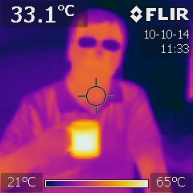

The core PANOPTES team who participated in the development of the prototype and baseline units are:
Olivier Guyon
 Olivier is an astronomer at the Subaru Telescope and the University of Arizona. Olivier started astronomy as an avid amateur astronomer at age 10, and enjoys building and using telescopes for amateur astronomy. His professional interest in exoplanets and his taste for amateur astronomy and astrophotography led him and other like-minded amateur/professional astronomers to start the PANOPTES project. Olivier’s professional website describes his exoplanet instrumentation work: coronagraphy, adaptive optics.
Olivier is an astronomer at the Subaru Telescope and the University of Arizona. Olivier started astronomy as an avid amateur astronomer at age 10, and enjoys building and using telescopes for amateur astronomy. His professional interest in exoplanets and his taste for amateur astronomy and astrophotography led him and other like-minded amateur/professional astronomers to start the PANOPTES project. Olivier’s professional website describes his exoplanet instrumentation work: coronagraphy, adaptive optics.
Josh Walawender
 Josh is an astronomer at the Subaru Telescope with a research interest in star formation. He earned his bachelors degree at the University of California at Berkeley and his PhD at the University of Colorado at Boulder. Josh has been an avid amateur astronomer since childhood and still enjoys observing sessions under the Big Island’s pristine skies. You can read more at Josh’s personal web page.
Josh is an astronomer at the Subaru Telescope with a research interest in star formation. He earned his bachelors degree at the University of California at Berkeley and his PhD at the University of Colorado at Boulder. Josh has been an avid amateur astronomer since childhood and still enjoys observing sessions under the Big Island’s pristine skies. You can read more at Josh’s personal web page.
Wilfred Tyler Gee
Nem Jovanovic
Frantz Martinache
Mike Butterfield
Mike is a graduate student at the College of Optical Sciences at the University of Arizona and an optical scientist at GEOST, Inc., in Tucson, AZ. He is the chief architect for the amateur astronomy space-debris and satellite tracking project, SpaceView. You can read more about Mike’s research, engineering, and general interests on his website.